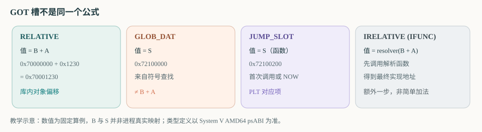

共享库地址不固定，程序为什么仍能调用它？
假设一个程序引用共享库里的 puts，系统启动程序时未必知道库最终映射到哪个虚拟地址。位置无关代码、动态重定位与 GOT/PLT 机制使链接时的引用能够在装载或调用阶段得到解析。
需要区分三件事：目标文件里的未解析引用、运行时加载器的重定位，以及某些符号绑定策略下的延迟绑定。不同架构、链接器选项与安全配置可能改变实际流程；以下以 Linux x86-64 ELF 为主要模型。
共享库 · GOT/PLT · 位置无关代码
同一个 puts，编译时不知道它会被映射到哪里，调用却能成功。这背后是「独立确定代码位置」与「晚一点解析符号」的分工。
首次延迟绑定：GOT 槽可能指向解析路径，由动态链接器找到 puts 并更新地址。
14.1 共享库的动机
我们从一个实际的对比开始：
| 特性 | 静态链接（.a） | 动态链接（.so） |
|---|---|---|
| 可执行文件大小 | 大（包含所有库代码的副本） | 小（只包含引用信息） |
| 磁盘空间占用 | 各可执行文件包含所提取的库代码 | 多个程序可引用同一份库文件 |
| 运行时内存占用 | 每个进程一份副本 | 只读代码页可共享；数据与私有映射通常各进程独立 |
| 库更新 | 需要重新链接 | 需兼容 ABI、版本与部署策略；运行中进程未必自动切换 |
| 启动速度 | 依程序与链接策略而异 | 可能有动态装载和重定位成本 |
| 版本兼容性 | 不会意外升级 | 可能遇到 "DLL Hell" |
| 编译方式 | gcc -static main.c |
gcc -fPIC -shared lib.c -o lib.so |
在 Linux 上，libc 默认就是以动态库（libc.so.6）形式提供的。试试这个命令：
$ ldd /bin/ls
linux-vdso.so.1 (0x00007ffd3a5c0000)
libc.so.6 => /lib/x86_64-linux-gnu/libc.so.6 (0x00007f8a1c400000)
/lib64/ld-linux-x86-64.so.2 (0x00007f8a1c600000)ldd 命令显示一个可执行文件依赖的所有共享库。你会发现，就连最简单的 ls 命令也依赖多个共享库。这就是现代 Linux 系统的常态——几乎所有程序都在使用动态链接。
14.2 GOT 与 PLT：把调用地址延后决定
假设 main 调用了共享库里的 puts。编译器不能预先知道运行时库的虚拟地址，因此需要间接入口。以常见的 x86-64 ELF 方案为例：
- PLT（Procedure Linkage Table）：可执行文件里的过程调用跳板，很多传统构建会生成
puts@plt。它通常通过 GOT 中的相应槽间接跳转。 - GOT（Global Offset Table）：保存可由装载器修正的指针，常见相关节有
.got与.got.plt。并非每个编译模式都会为每次外部调用生成同样的 PLT 形式。 - 动态链接器：在装载阶段解析必须解析的重定位；若允许 lazy binding，部分函数的调用目标可推迟到首次调用时才解析。
首次通过 PLT/GOT 的调用可能转入 resolver，把解析到的真实函数地址写入槽中；后续调用走已解析的地址。若启用了 -Wl,-z,now 或 LD_BIND_NOW=1，通常会在装载时完成相关函数绑定，不走这个首次调用解析流程。现代工具链的 -fno-plt、RELRO 等也会影响细节。
$ cc -O0 hello_puts.c -o hello_puts
$ readelf -dW hello_puts | grep NEEDED
$ readelf -rW hello_puts
$ objdump -d hello_puts | grep -A6 '@plt'
$ LD_BIND_NOW=1 ./hello_puts
# 输出与编译选项、架构、libc 和发行版设置有关诊断而非猜测：使用 readelf -d 观察动态依赖，readelf -r 查看重定位，objdump -d 检查是否真的生成了 PLT。不要把某段固定的伪汇编当作所有 x86-64 ELF 程序的真实实现。
14.3 PIC：同一段机器码为什么能被复用
共享对象的代码可能映射到不同进程的不同虚拟地址。位置无关代码（PIC）尽量避免让共享代码页包含必须在加载时修改的绝对地址。x86-64 常利用 RIP 相对寻址，并通过 GOT 对可被抢占的外部数据对象间接寻址。
/* demo.c：外部全局变量 */
extern int counter;
int read_counter(void) { return counter; }
$ cc -O2 -fPIC -c demo.c -o demo.o
$ objdump -dr demo.o
# 典型 x86-64 形态（示意，并非保证逐字匹配）：
# mov counter@GOTPCREL(%rip), %rax
# mov (%rax), %eaxRIP + 位移 对代码装载基址的整体平移不敏感；GOT 数据项可按需重定位。对于本地不可抢占符号，编译器还可能省掉 GOT 间接层。PIC 没有固定的性能损失百分比：额外成本需结合机器架构、访问模式、链接器优化与真实基准测试讨论。
使用 cc -shared -fPIC 构建共享对象；ASLR 让映射基址更不固定，但 PIC 的价值并不限于 ASLR。
14.4 LD_PRELOAD：安全地理解符号插桩
在 Linux 的常见动态链接环境中，LD_PRELOAD 可以让一个共享对象提前参与符号查找。这是学习动态符号解析的实用实验，但它不是安全边界，也无法拦截静态链接、隐藏符号、直接系统调用等所有路径。
先用较简单的 puts 做实验，而不是直接拦截 malloc：后者容易因 dlsym、日志或初始化过程再次分配内存，导致递归、死锁或崩溃。
/* trace_puts.c：GNU/Linux 演示性插桩 */
#define _GNU_SOURCE
#include <dlfcn.h>
#include <stdio.h>
#include <unistd.h>
int puts(const char *s) {
int (*next_puts)(const char *) = dlsym(RTLD_NEXT, "puts");
const char label[] = "[hook] puts called\n";
(void)write(STDERR_FILENO, label, sizeof(label) - 1);
if (next_puts == NULL) return EOF;
return next_puts(s);
}/* hello_puts.c */
#include <stdio.h>
int main(void) { return puts("hello") == EOF ? 1 : 0; }
$ cc -fPIC -shared trace_puts.c -o libtraceputs.so -ldl
$ cc hello_puts.c -o hello_puts
$ LD_PRELOAD=./libtraceputs.so ./hello_puts
# 标准错误：[hook] puts called
# 标准输出：hello这个例子仅演示符号插桩的基本路径，不等于生产可用的通用 tracing 框架。RTLD_NEXT 查找当前对象之后的下一个符号定义；真实场景要处理线程安全、递归、错误报告和 ABI。安全执行模式（如 set-user-ID 程序）还会对 LD_PRELOAD 施加限制。
14.5 动手验证：让链接器显示它的工作
仓库提供 共享库插桩实验文件。先预测以下三种情况，再运行比较：
- 普通运行
./hello_puts：是否会输出插桩前缀？ - 带
LD_PRELOAD运行：哪一个输出属于标准错误？哪一个属于标准输出？ - 再加
LD_BIND_NOW=1：输出行为是否改变？绑定时机和函数语义是两个不同问题。
最后用 readelf -rW 对比两份程序的重定位信息，并说明：LD_PRELOAD 影响的是符号查找路径，而不是把 puts 的机器码复制进 main。
参考与边界
以下以 ELF/GNU/Linux 动态链接为主：ld.so(8)、dlsym(3)、GNU ld（-z now、RELRO）。其他系统的运行时装载器并不保证相同机制。
推导校验 · 14 / REASONING
库的装载基址变了，哪些地址必须跟着变？
共享对象可被映射到不同的虚拟基址，因此指向库内部对象的指针和指向外部符号的调用入口不能混成一个问题。对一个已在对象内确定偏移、无需名字查找的 ELF x86-64 R_X86_64_RELATIVE 重定位，动态链接器把结果设为 B + A，B 是该共享对象的装载基址，A 是相对加数。它不是“只把 GOT 中所有槽都填成 B+A”。
两次运行中内部对象相对库的偏移都保持 0x1230；只有装载基址改变。这个例子说明为何可以让代码使用相对寻址，而数据中的必要指针由装载器修复；并不承诺任意共享库的所有指针都通过 RELATIVE 处理。
| 情形 | 需要解析什么 | 何时完成 |
|---|---|---|
R_X86_64_RELATIVE | 对象内固定偏移，计算 B+A | 通常装载重定位时，不涉及外部符号查找 |
R_X86_64_JUMP_SLOT | 外部函数符号，更新相应调用入口 | 依实现与设置，可立即绑定或延迟绑定 |
LD_BIND_NOW=1 或 -Wl,-z,now | 要求提前进行适用的函数绑定 | 通常加载阶段；有利于配合完整 RELRO |
访问共享库的符号也可能使用 GLOB_DAT 等其他重定位。GOT/PLT 只是常见实现机制，不能由“动态库”三个字断定每次调用都会经过 PLT 或一定存在首次惰性绑定。完整 RELRO 与 NOW 有安全意义，但确切页面保护及解析时序以工具链和加载器为准。
cc -std=c11 -fPIC -shared -O0 examples/deep-ch13-18-shared.c -o /tmp/deep-shared.so
readelf -rW /tmp/deep-shared.so
readelf -dW /tmp/deep-shared.so
python3 examples/deep-ch13-18-models.py 14在 readelf 中按实际输出辨认类型，不把此固定算例冒充进程实测映射。参考 glibc 动态链接器安全建议及 ld.so(8)。
推导校验 · 14b / GOT SLOT TAXONOMY
每个 GOT 槽都等于 B + A 吗？

B + A 只对R_X86_64_RELATIVE这类对象内固定偏移成立；导入符号的 GOT 槽要经过符号查找，公式不同。上一节强调 R_X86_64_RELATIVE 计算为 B + A。但动态段里同时存在多种重定位，它们写入的 GOT 槽不是同一个公式。若把「GOT 槽 = B + A」当作普遍规律，就会对导入符号、函数调用入口和 IFUNC 解析得到错误结果。
| 重定位 | 写入值 | 解析对象 |
|---|---|---|
R_X86_64_RELATIVE | B + A | 本对象内固定偏移 |
R_X86_64_GLOB_DAT | S | 全局数据符号地址（可能来自其他库） |
R_X86_64_JUMP_SLOT | S | 外部函数地址（PLT 对应 GOT 项） |
R_X86_64_IRELATIVE | resolver(B+A) | IFUNC：先调用解析函数返回实现地址 |
S（名字查找得到，A 通常为 0）为什么 GLOB_DAT 的槽可能是 0x72100000 而非 0x70001230？因为 S 取决于符号查找按装载顺序选中的定义：它可能指向另一个共享对象、也可能是被 LD_PRELOAD 抢插而换掉的定义。这类槽由动态链接器用符号解析结果填写，与 B + A 无关。
与 RELRO 的关系： -Wl,-z,relro,-z,now（完整 RELRO）要求在装载阶段完成这些重定位，随后把相应 GOT 区域设为只读；延迟绑定（JUMP_SLOT 在首次调用时填写）与控制这两者配合。重定位类型决定「写什么值」，RELRO/NOW 决定「何时写、之后能否再写」，两者不能互相代替。
cc -std=c11 -fPIC -shared -O0 examples/deep-ch13-18-shared.c -o /tmp/deep-shared.so
readelf -rW /tmp/deep-shared.so # 区分 RELATIVE / GLOB_DAT / JUMP_SLOT
cc -std=c11 -O0 -Wl,-z,relro,-z,now examples/deep-ch13-18-shared.c -shared -fPIC -o /tmp/deep-now.so
readelf -dW /tmp/deep-now.so # 查看 BIND_NOW / FLAGS_1 标志
python3 examples/deep-ch13-18-b.py 14b上例的 B、S 是固定输入，并非某个进程真实映射；重定位公式依据 System V AMD64 psABI · Relocation Types，装载时序与 RELRO 依据 ld.so(8)。
这一章把动态链接拆成三个独立问题：共享对象如何映射、调用目标何时解析、PIC 如何避免对共享代码页做绝对地址修补。通过 puts 的小实验，我们还能观察符号插桩如何改变查找结果。从下一章开始，我们将进入一个全新的主题——异常控制流（Exceptional Control Flow, ECF）。你写的每个程序都会涉及系统调用、信号处理、进程控制——这些都属于 ECF 的范畴。理解了 ECF，你就理解了操作系统的"灵魂"。